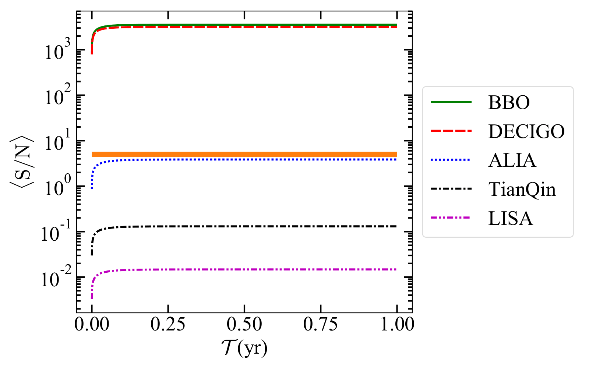
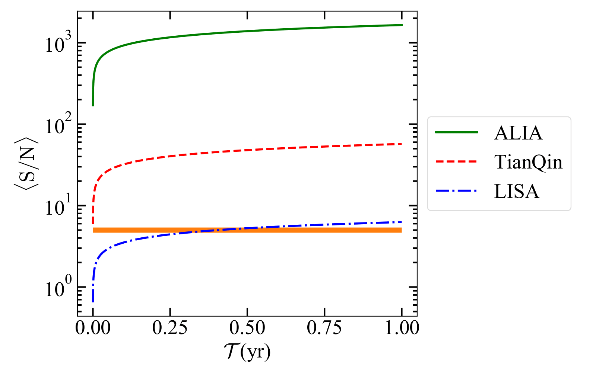
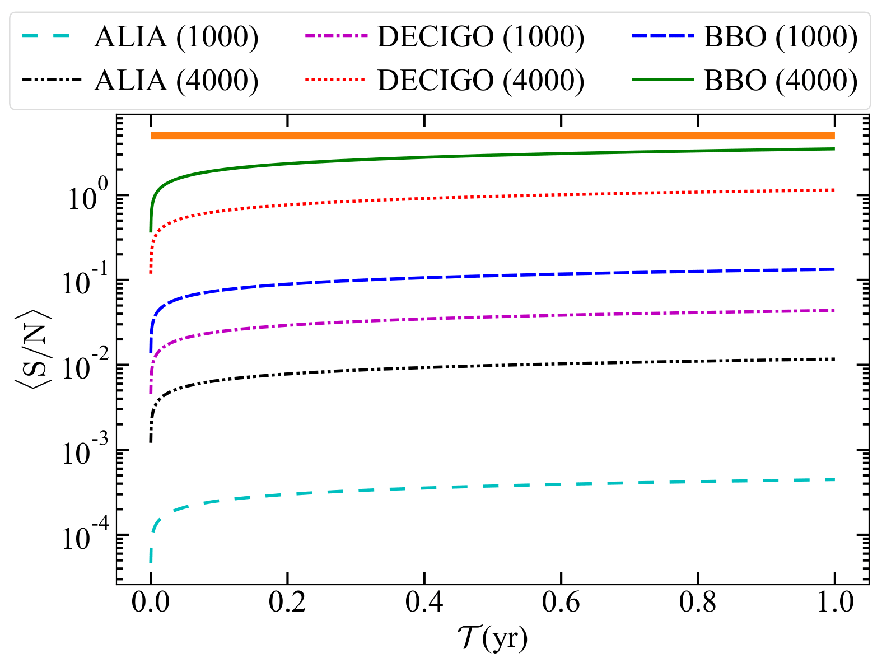
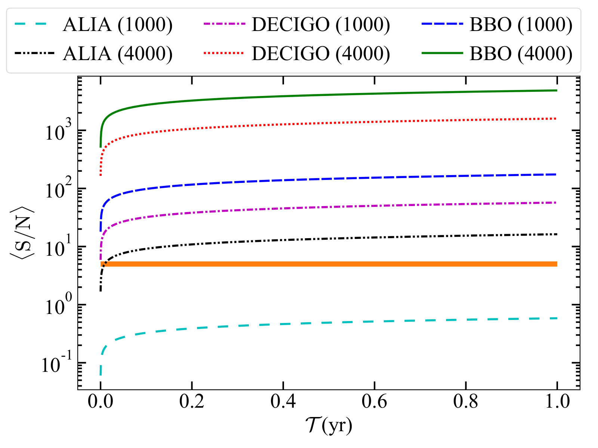
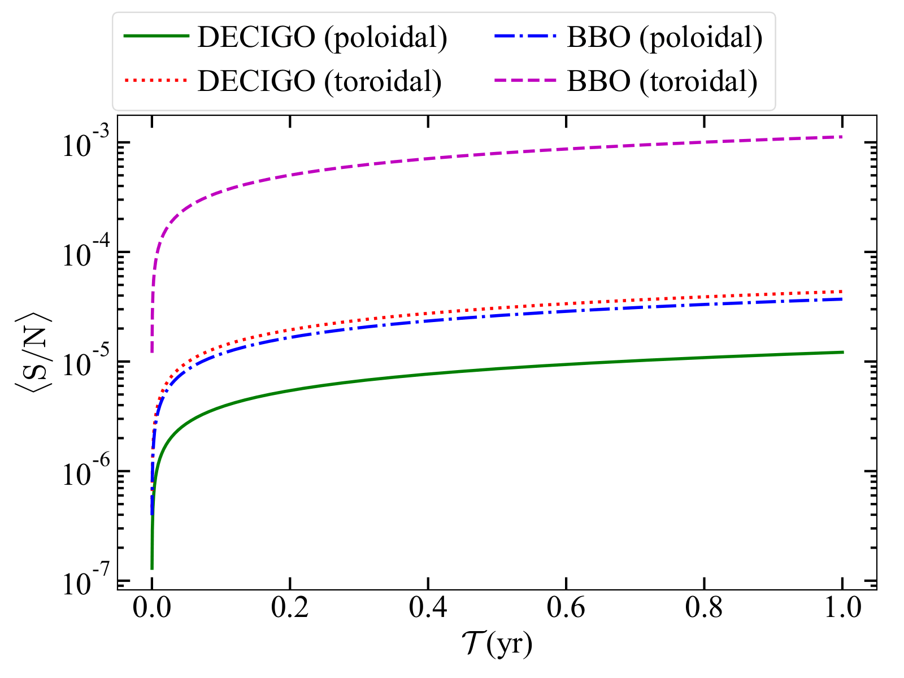

Futuristic gravitational wave observations to resolve dichotomy of compact objects
Gravitational waves are invisible ripples in space travel at the speed of light. It is generated in different scenarios, such as when two celestial bodies orbit around each other, an isolated body with tri-axial symmetry spins, inhomogeneity in matter distribution in the early universe, etc. Gravitational-wave astronomy aims to study these waves to improve the understanding of objects such as white dwarfs, neutron stars, and black holes, events such as supernovae, and processes including those of the early universe shortly after the Big Bang. The article describes how futuristic gravitational wave observatories can be used to resolve the dichotomy of compact objects.
Historically, astronomy primarily relies on electromagnetic radiation. Over the past hundred years, various interesting astronomical objects have been discovered with gamma-ray detectors to radio telescopes. In recent years, gravitational wave astronomy has opened a new window to probe various exciting objects, and we can now look into the universe from a very different perspective. LIGO/Virgo gravitational wave detectors have so far made tens of detections from the merger of various compact objects. These are ground-based detectors operating at frequencies more than 1 Hz. As time progresses, these detectors have been upgraded continuously to increase their sensitivities so that we can look objects residing at further distances. Moreover, around 2035, a space-based gravitational wave mission, LISA is planned to launch, which would operate at less than 1 Hz frequency. Many interesting objects such as galactic binaries, massive binaries, extreme mass ratio inspirals, etc., emit gravitational radiation at less than 1 Hz frequencies. Hence the current ground-based detectors cannot detect these objects, and LISA is planned to probe them. It is important to note that none of these objects are isolated in nature.
Recently, a group of researchers have claimed that LISA might detect some isolated compact objects too. The term compact objects primarily represent white dwarfs, neutron stars, and black holes. White dwarfs are the end state of stars with mass less than


Figure 1: Gravitational wave S/N as a function of integration time for a white dwarf with central density= 2 × 1010 g cm−3. The thick orange line corresponds to <S/N> ≈ 5.
Gravitational wave astronomy is also helpful to resolve the dichotomy of some other objects too. There are some isolated compact objects, named soft gamma repeater~(SGR) and anomalous X-ray pulsar~(AXP), which are mostly believed to be neutron stars as they are found to be associated with supernova remnants. However, some of them do not have a supernova remnant association, and their magnetic field is also unknown. Hence, some researchers have also shown that some of their features can be explained assuming they are white dwarfs. To resolve this controversy, the researchers have shown that gravitational wave astronomy is also a helpful tool. It was shown that if they are neutron stars, no proposed gravitational wave detector can detect them. On the other hand, if they are white dwarfs, they can be detected by BBO and DECIGO detectors within 1 year of detection period. The exact time needed for the detection is dependent on the magnetic field configuration and its strength (Fig. 2).



Figure 2: Gravitational wave S/N as a function of integration time for 1RXS J170849.0−400910. In the parentheses of parts (a) and (b), the radius of the white dwarf in the units of km is mentioned. For part (c), in the parentheses, the dominant magnetic field configuration in neutron star is mentioned.
In this way, gravitational wave astronomy will be a useful tool to resolve dichotomy related to various compact objects.
Original paper: Resolving dichotomy in compact objects through continuous gravitational waves observation
First Author: Surajit Kalita
Co-authors: Tushar Mondal, Christopher A. Tout, Tomasz Bulik, Banibrata Mukhopadhyay
First author’s Institution: Indian Institute of Science, Bengaluru
Related articles
- Gravitational Waves in an Inhomogeneous Universe
- Insight into the pulsar emmision mechanism using subpulse drifting: Subpulse drifting in PSR J1822−2256
- General Relativity And Its Effect On A Deformed And Misaligned Pulsar
- Understanding the evolution of the binary star system ‘Cen X-3’: New measurements of the spin and orbital parameters of the system
- How strong is a neutron star's magnetic field?